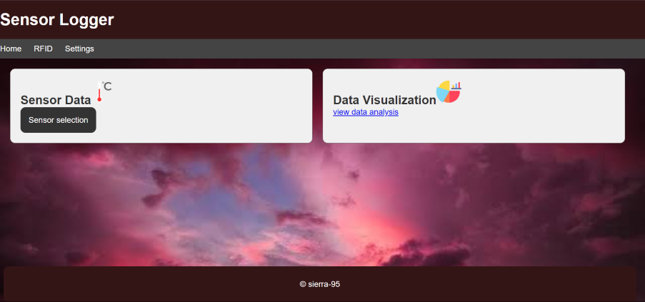
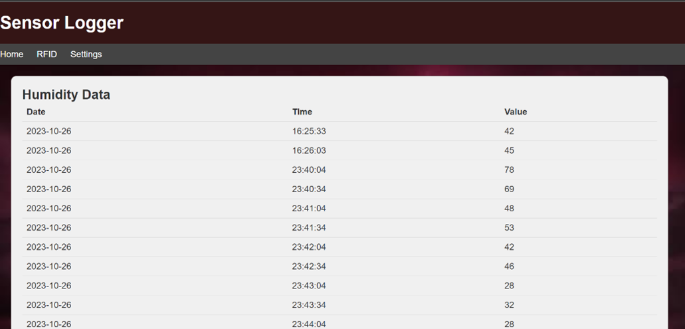
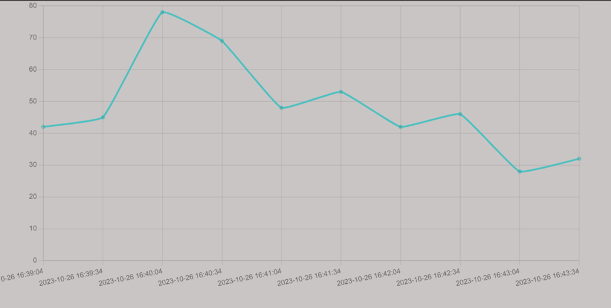
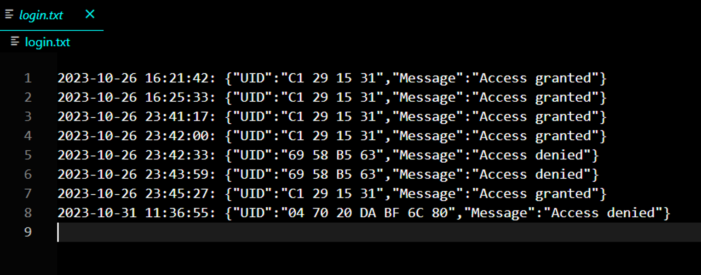

Michael Machohi
Mechatronic and Software engineer
The Sensor-logger [Check out on github?]
Introduction:
For a while, data collection has been carried out manually at many stations, leading to a gradual increase in paperwork compared to previous years. Even today, despite the shift to computerized data analysis in most stations, data collection still relies on traditional instruments. While this approach is not inherently wrong, it has limited the potential for automation in these fields, resulting in a lack of improvement.
Over time, sensors have been meticulously designed to provide accurate and reliable readings. With their seamless integration into automation systems, they have become the preferred choice. This project aims to streamline data collection by utilizing the Internet of Things; specifically, integrating Internet-connected sensors to automate data collection in the field of statistics and data analysis. Although currently limited to two sensors (DHT11 and RFID), the project demonstrates the feasibility of automating data collection.
I took on the responsibility of overall project management, which included system design, sensor integration, and web development. The goal was to create a user-friendly dashboard enabling users to view raw or analyzed data in graphical formats. Additionally, users would have the capability to export collected data for further analysis
Architecture:
The project is outlined in three main phases: data population, data storage, and data projection.
1. Data Population: The Atmega32p serves as the central hub for data collection, interfacing with various sensors like the DHT11 (for temperature and humidity) and RFID sensors (for Unique Identifier - UID). The DHT11 sensor provides real-time environmental information; temperature and humidity levels. while the RFID sensor captures Unique Identifiers (UIDs) associated with RFID cards. Data collection is triggered by the RFID.
2. Data Storage: Data collected from the sensors is mapped using PySerial to a MySQL database, where it awaits retrieval and posting for users to access.
3. Data Projection: The project includes a user-friendly web dashboard created using HTML, CSS, and JavaScript for the front end. Flask was employed for back-end development due to its simplicity. Data is visualized and monitored through this interface, offering users a comprehensive view of sensor-based systems.

Features:
Users have the abilit instantly access real-time raw data from both humidity and temperature sensors, providing a quick and direct insight into environmental conditions.
Graphical data can be viewed and analyzed by just clicking a button, no more Excel or manual plotting, the project does it all for you.
Only superusers with RFID cards can trigger the system, enabling a tracking system for access control cards and obtain insights into individuals' clock-in times, fostering enhanced security and accountability.
